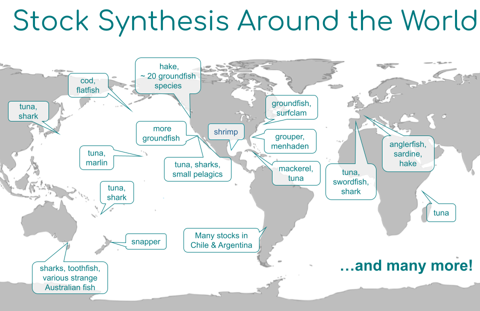

Stock Synthesis (SS3) Website
Welcome to the Stock Synthesis website!
News!
- New SS3 User Forum Google Group - request to join. This is meant to replace VLAB forums and foster a self-sufficient user community.
- The next SS3 Webinar is 10/03/2024 at 3 pm Eastern / 12 PM Pacific on Recrutiment with Time-Varying Biology.
- An SS3 ICES Course will be offered in Copenhagen, DK October 7-11, 2024 still has availability. See the course page for more details and email training@ices.dk directly to register.
Introduction
Stock Synthesis (SS3) is an age- and size-structured stock assessment model in the class of models termed integrated analysis. Stock Synthesis has evolved over time to be able to model a wide range of fish population dynamics and somatic growth and to utilize diverse types of data. The model is coded in C++ with parameter estimation enabled by automatic differentiation though AD Model Builder ADMB.
SS3 is made up of
- A population sub-model that simulates the following population processes:
- biology (growth, maturity, fecundity),
- recruitment,
- movement,
- fishery selectivity
- natural and fishing mortality, and
- responsiveness to environmental and predation factors.
- An observation sub-model that estimates expected values for various types of data.
- A statistical sub-model that characterizes the data’s goodness of fit and obtains best-fitting parameters with associated variance.
- A forecast sub-model that projects management quantities.
There are 100+ stocks in the US and throughout the world that use SS3 for which we have provided many national, international, and web-based trainings on SS3. Additionally, we have a very active user-base that contributes heavily to SS3 and the associated R packages as well as participating in the online discussions and forums. 
Installing the Stock Synthesis latest release
 Download the latest release of the Stock Synthesis executable.
Download the latest release of the Stock Synthesis executable.
Change log
To see the changes made in the latest release of Stock Synthesis, please see the change log on GitHub that shows all changes from v.3.30.19 onward. To see the change log for versions prior to v.3.30.19, please download this Excel spreadsheet.
Getting Started with Stock Synthesis
To get started with Stock Synthesis, please see the presentation below and the Getting Started with Stock Synthesis Tutorial:
Getting Started Using the Stock Assessment Continuum Tool
If you are just getting started with Stock Synthesis, we highly recommend downloading the Stock Assessment Continuum Tool, a shiny app (pictured below) where users can provide data and life-history information to create the Stock Synthesis input files, run the model, and produce plots and tables via the {r4ss} package. 
Getting Started Using the Input Files
To learn more about how to build your own models in Stock Synthesis using the input files directly, see the Develop a Stock Synthesis model guide.
Interacting with Stock Synthesis and Viewing Output Using {r4ss}

The {r4ss} package is a collection of R functions for interacting with Stock Synthesis. These functions include downloading the executable, changing model input, running the model, and creating an assortment of plots and tables. More information about using {r4ss} is available in the “Introduction to r4ss” vignette. Furthermore, you can navigate to these example plots that were created using {r4ss} for the Big Skate model, which can be found in the ss3-test-models repository.
User Example Models
We maintain a GitHub repository of example stock synthesis models for users. Information on what the key features of the user example models are and how to download them can be found in the SS3 user examples repository.
Asking questions about Stock Synthesis
Please look for answers or submit questions to the Stock Synthesis Google Group (must request to join first). Questions can also be asked by opening an issue or posting a discussion in the ss3-source-code repository, or by emailing nmfs.stock.synthesis@noaa.gov.
Contributing to Stock Synthesis
Have feature requests or bug reports? Want to contribute code? Please open an issue. If you are able to contribute code to fix the issue or add a feature, then the SS3 Team will communicate with you after which you will be able to submit a pull request from your fork of the repository to be reviewed by the SS3 Team. Even Team members cannot directly contribute to the ss3-source-code without a pull request. For complete details, please see CONTRIBUTING.md
This project and everyone participating in it is governed by the National Marine Fisheries Service (NMFS) Fisheries Toolbox Code of Conduct. By participating, you are expected to uphold this code.
Tools for working with Stock Synthesis
As Stock Synthesis usage has grown so has the number of tools to work with it. These include repositories on GitHub with the stock-synthesis topic, some of which are listed below, as well as some of the following tools found in other locations:
- r4ss: Create plots and tables of Stock Synthesis output and functions to work with Stock Synthesis in R.
- ss3diags: Run advanced diagnostics for Stock Synthesis models.
- ss3sim: Conduct simulation studies using Stock Synthesis.
- SSMSE: Use Stock Synthesis operating models in Management Strategy Evaluation.
- sa4ss: Create accessible R markdown stock assessment documents with results from Stock Synthesis models. Note this tool is intended for use by analysts within the Northwest and Southwest Fisheries Science Centers currently.
- Data limited tools:
- Simple Stock Synthesis (SSS)
- Extended Simple Stock Synthesis (XSSS)
- Stock Assessment Continuum Tool(previously the SS-DL-tool), a shiny app that includes XSSS and SSS in its functionality.
- SS3 Shiny helper app: Visualize a couple common selectivity pattern options available within Stock Synthesis.
- SSI: Stock Synthesis Interface, a GUI for developing models and running Stock Synthesis which links to {r4ss}. Note that SSI is not supported for versions of Stock Synthesis beyond v.3.30.21.
Have a tool to work with Stock Synthesis that should also be mentioned? Open an issue in the ss3-website repository to let us know!
How to Cite Stock Synthesis
Please cite Stock Synthesis as:
#| code-overflow: wrap
Methot, R.D. and Wetzel, C.R. (2013). Stock Synthesis: A biological and statistical framework
for fish stock assessment and fishery management. Fisheries Research, 142: 86-99.
https://doi.org/10.1016/j.fishres.2012.10.012The following BibTeX entry can be copied and used in a .bib file:
#| code-overflow: wrap
@article{methotwetzel2013,
title={Stock Synthesis: A biological and statistical framework for fish stock assessment
and fishery management},
author={Richard Donald {Methot, Jr.} and Chantell R. Wetzel},
year={2013},
journal={Fisheries Research},
volume={142},
pages={86--99},
doi={10.1016/j.fishres.2012.10.012},
}To see how to cite the Stock Synthesis User Manual, please refer to the SS3 User Manual guidance.

U.S. Department of Commerce | National Oceanographic and Atmospheric Administration | NOAA Fisheries